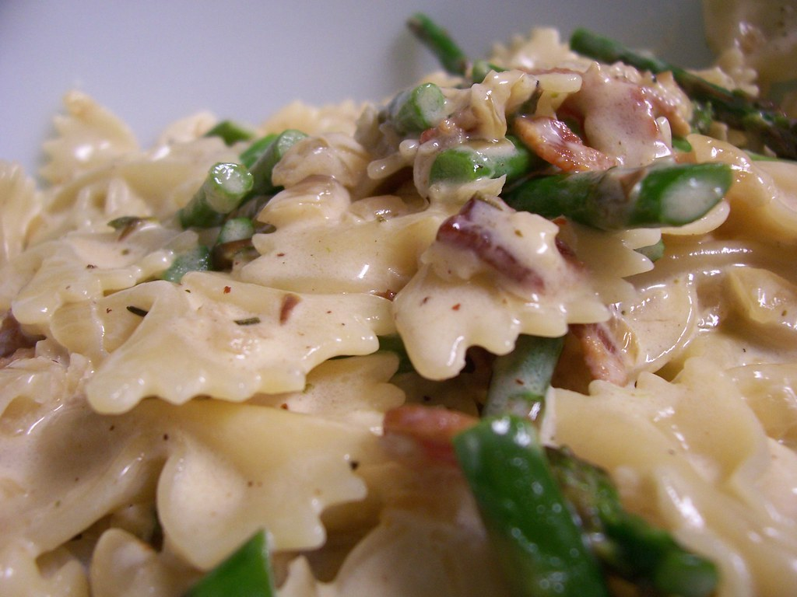

I have made this recipe countless times, it always is a winner. I have switched smoked pancetta in favour for smoked bacon
You can also switch the type of pasta from farfalle to any other e.g. fusilli. It should be enough to feed 4 people
Heat the oil in another pan and add the bacon. Fry over high heat for 3 - 4 minutes until the bacon is golden brown.
Add the garlic and fry for a minute.
Pour in the cream and bring to the boil. Let simmer for 5 minutes until reduced and thickened slightly.
Tip in the peas, bring back to a simmer and cook for another 3- 4 minutes.
Stir the grated parmesan into the sauce, then add Italian herbs.
When the pasta is ready, drain it in a colander and immediately tip into the sauce.
Toss the pasta until well coated with the creamy sauce.
Divide among warm plates and sprinkle over a little more parmesan to serve.